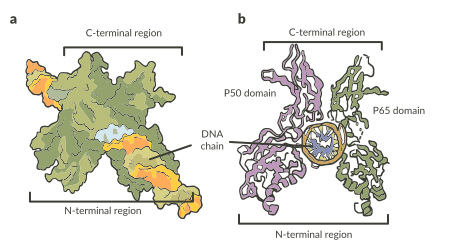

São moléculas complexas, em geral formadas por segmentos de ácido nucleico, proteínas nucleares e outras moléculas, que se complexam em compostos de grande peso molecular e se encaixam em sítios específicos dos cromossomos, atuando como indutores ou inibidores da transcrição de grupos de genes específicos.
Estrutura química do fator nuclear kappa B (NF-κB).

Fonte: Creative Diagnostics.